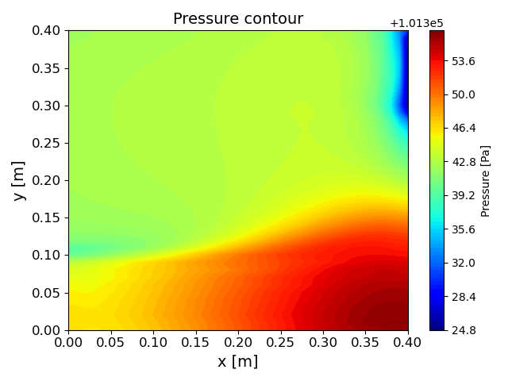
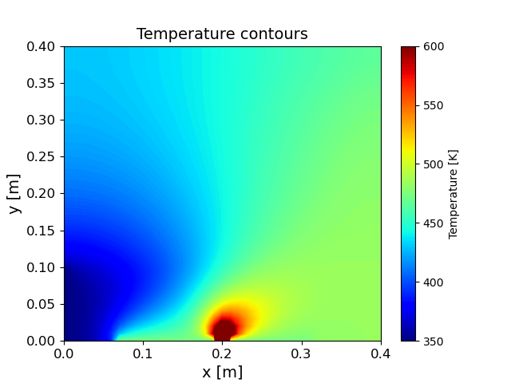
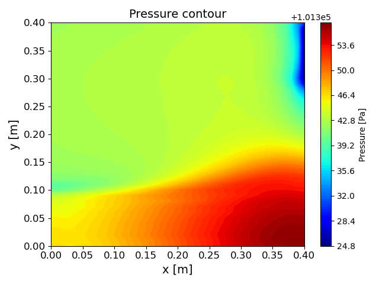
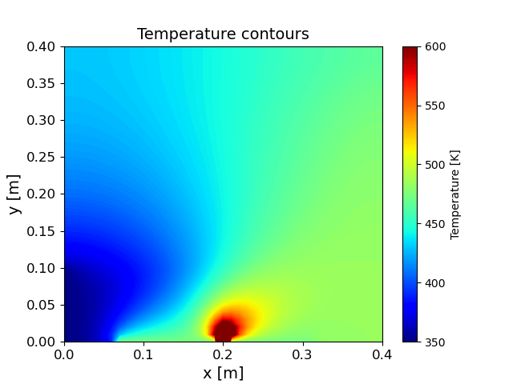

Visualizing results
The chamber design was iteratively refined through simulation-driven analysis. Key modifications were made to the inlet and outlet positioning to enhance airflow efficiency. Below are results from CFD simulations evaluating the effectiveness of the design.
 


